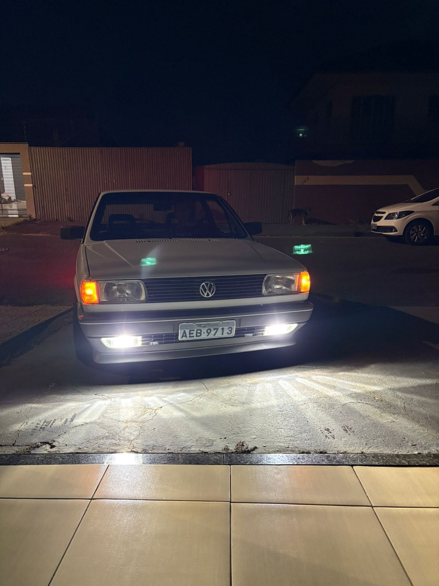
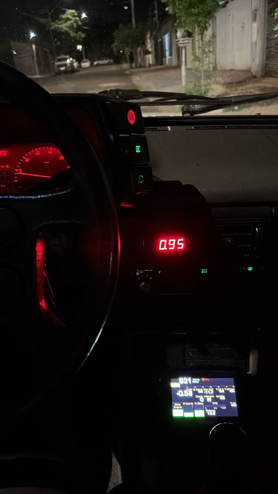

História do Volkswagen Gol
O Volkswagen Gol, conhecido popularmente como Gol Quadrado, é um dos carros mais marcantes da história automotiva do Brasil. Ele foi lançado pela Volkswagen do Brasil em 1980, para substituir o famoso Volkswagen Fusca como principal carro popular da marca no país. O apelido “quadrado” surgiu por causa do design reto e angular, muito comum nos anos 80 e 90. O Gol foi desenvolvido especialmente para o mercado brasileiro e utilizava a plataforma da família BX, junto com modelos como o Volkswagen Voyage, a Volkswagen Parati e a Volkswagen Saveiro. No início, o carro tinha motor refrigerado a ar, parecido com o do Fusca, mas as vendas não foram muito boas. Em 1981, a Volkswagen lançou versões com motor refrigerado a água, que fizeram o Gol se tornar um enorme sucesso no Brasil. Durante os anos 80 e 90, o Gol Quadrado virou símbolo de praticidade, economia e resistência. Era muito usado por famílias, jovens e até em competições automobilísticas.



Versões do Gol Quadrado
- GOL BX
- GOL CL
- GOL GL
- GOL GT
- GOL GTS
- GOL GTI
Por que o Gol quadrado está ficando cada vez mais valorizado ?
- Virou um carro clássico muito querido no Brasil
- Possui mecânica resistente e fácil manutenção
- Muitos modelos antigos estão sendo restaurados
- É muito procurado por fãs de carros antigos e tuning
- As versões esportivas ficaram raras com o passar dos anos
Sobre o site Quatro Rodas
O Quatro Rodas é um dos sites e revistas automotivas mais famosos do Brasil. Criado pela Editora Abril em 1960, o portal é conhecido por trazer notícias, testes de carros, comparações, avaliações e curiosidades do mundo automotivo. Muitas pessoas utilizam o site para pesquisar informações sobre carros antigos, lançamentos e modelos clássicos como o Gol Quadrado.
Clique no link abaixo para acessar o site oficial:
Quatro Rodas